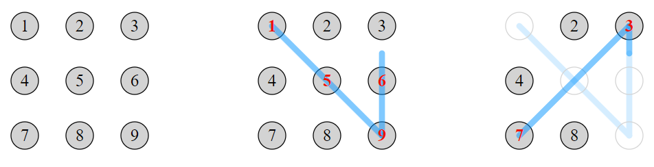

A touch-screen device can be unlocked with a "password" consisting of a sequence of two or more distinct spots that the user selects from a rectangular grid of spots on the screen. The user enters their sequence by touching the first spot, then tracing a straight line segment to the next spot, and so on until the end of the sequence. The user's finger remains in contact with the screen throughout, and may only move in straight line segments from spot to spot.
If the finger traces a straight line that passes over an intermediate spot, then that is treated as two line segments with the intermediate spot included in the password sequence. For example, on a $3\times 3$ grid labelled with digits $1$ to $9$ (shown below), tracing $1-9$ is interpreted as $1-5-9$.
Once a spot has been selected it disappears from the screen. Thereafter, the spot may not be used as an endpoint of future line segments, and it is ignored by any future line segments which happen to pass through it. For example, tracing $1-9-3-7$ (which crosses the $5$ spot twice) will give the password $1-5-9-6-3-7$.

There are $389488$ different passwords that can be formed on a $3 \times 3$ grid.
Find the number of different passwords that can be formed on a $4 \times 4$ grid.